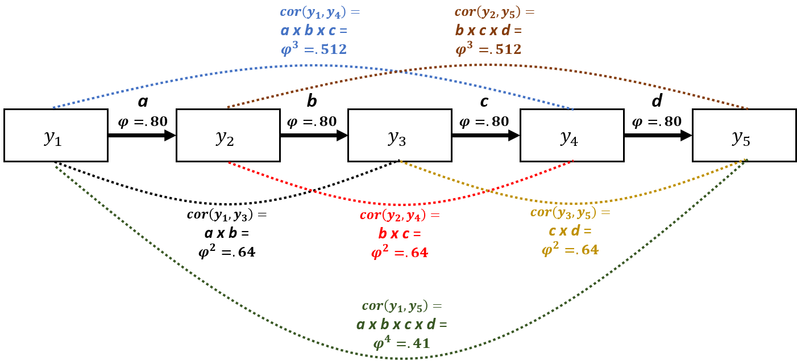
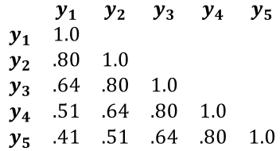
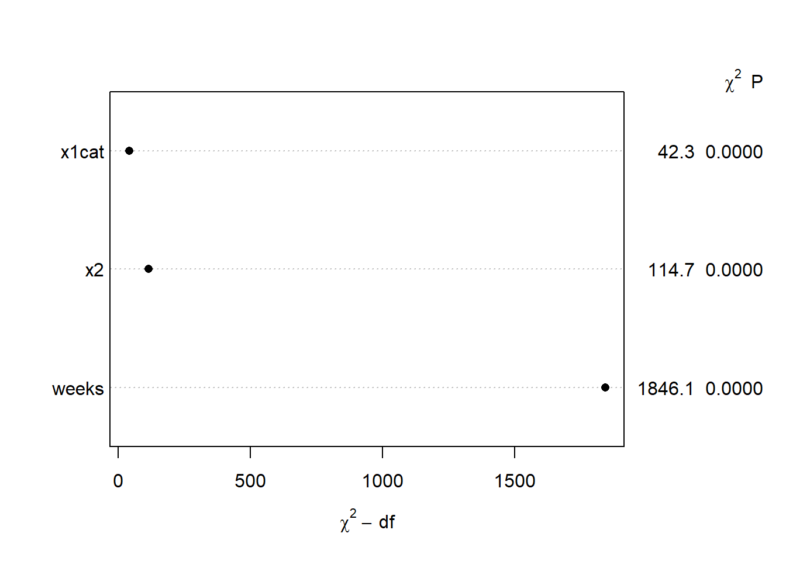
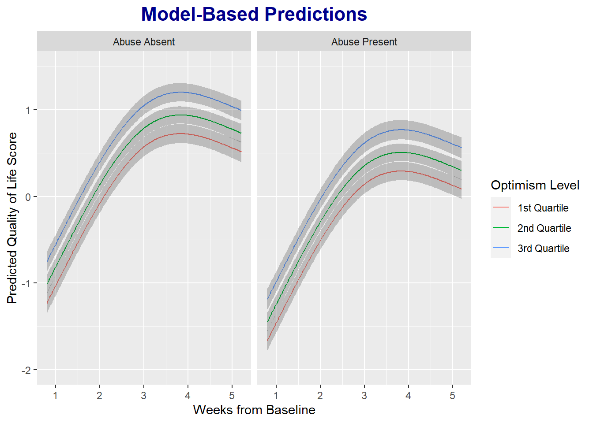
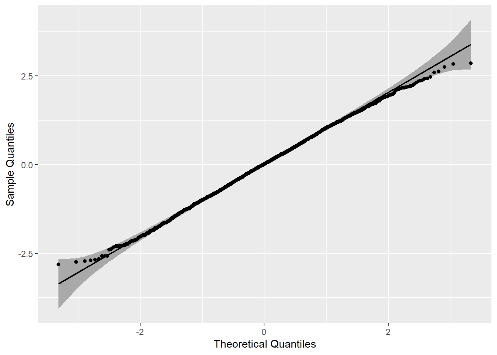
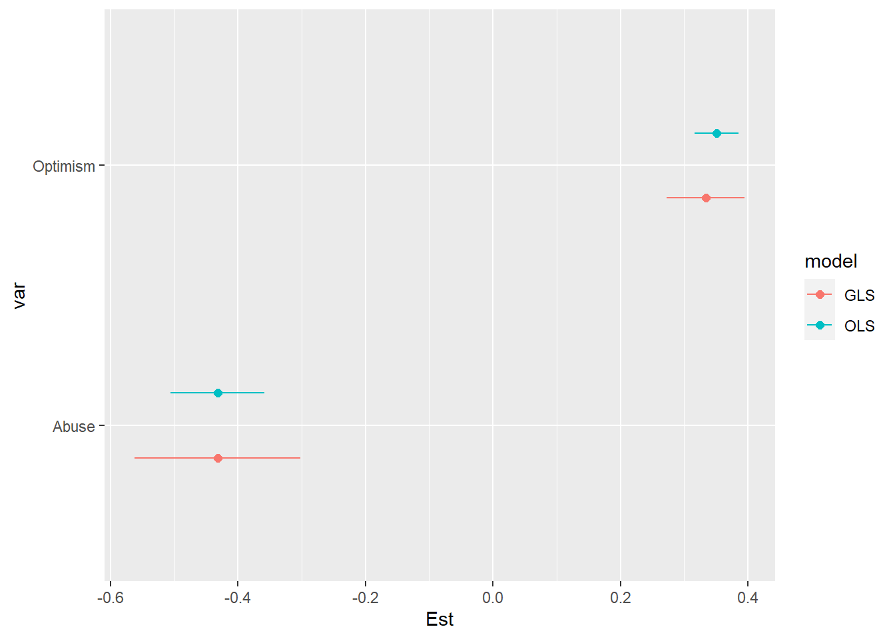

Generalized Least Squares (GLS) Regression Example
Steve Brunwasser
2022-07-20
knitr::opts_chunk$set(echo = TRUE, warning = F, message = F)Disclaimer
This is a work-in-progress. I will be revising and adding more material soon. Please send corrections and suggestions to brunwasser@rowan.edu.
Recommended Reading
- Harrell F. (2020). Regression Modeling Strategies
- Harrell F. (2022). Longitudinal Data: Think Serial Correlation First, Random Effects Second
- Pecar & Brabec (2016). Marginal models via GLS: a convenient yet neglected tool for the analysis of correlated data in the behavioural sciences
- Pinheiro & Bates (2000). Mixed-Effects Models in S and S-PLUS
Overview & Rationale
The purpose of this page is to demonstrate the use of generalized least squares (GLS) regression for modeling longitudinal data. A critical assumption of ordinary least squares (OLS) regression is that errors are independent – i.e., knowing how much one observation deviates from the population value of interest doesn’t tell us anything about the size of deviations among other observations. When individuals provide repeated observations, e.g., in a longitudinal study, this assumption is untenable. Let’s say that individuals participants provide outcome data at 5 time points. We would expect the 5 data points provided by the same individual to be correlated – some individuals will have a general tendency to have negative errors (i.e., they generally score low on the outcome relative to the population) while others will have positive errors (i.e., they generally score high on the outcome relative to the population). OLS regression (and generalized linear models more broadly) won’t do in these scenarios because observations from the same individuals are inherently correlated.
Let’s say that you had 500 participants who each provided outcomes measurements at 5 time points (assume no missing data for the time being): Your dataset would have 2,500 observations. If you run an OLS regression, the software will think that you have \(N=2,500\), with each data point providing unique information. But in reality, each subsequent data point provided by an individual contains only partly new/unique information and partly redundant information. You can think of each individual participant as being a cluster containing 5 correlated data points. The higher the within-person (i.e., within-cluster) correlation, the less unique information each data point provides. The consequence of ignoring the within-person correlations is that you will get standard errors and p values that are too small and confidence intervals that are too narrow (i.e., inflated Type I errors). The software assumes that your sample size is much larger than it really is and therefore underestimates the amount of uncertainty in your parameter estimates.
GLS addresses this problem by allowing you to specify patterns of within-cluster (in this case, within-person) correlations for the outcome variable so that we are no longer assuming that observations from the same cluster are independent. There are many different correlation patterns that you could specify depending on your assumptions about how the within-cluster data points are correlated. We will deal only with situations where you have longitudinal data and repeated outcome measurements are clustered within individual participants. Further, we will implement only one common form of temporal correlation: the first-order autocorrelation structure (\(AR_1\)). The \(AR_1\) structure assumes that outcomes measured at adjacent time points are the most strongly correlated and that the strength of the correlation deteriorates the greater the distance between the two measurements.
Imagine you took weekly measurements of depressive symptoms over 5 weeks. You then have 5 depression measurements (\(y\)) per person (\(i\)) taken at equally spaced time points (\(t\)). So depressive symptoms for person 1 at the five time points could be written as (\(y_{it}\)): \(y_{11}\), \(y_{12}\), … , \(y_{i5}\). The \(AR_1\) model would say that measurements at adjacent time points have the strongest correlation: e.g., \(cor(y_{it}, y_{it+1})\) > \(cor(y_{it}, y_{it+2})\). We will also assume that the correlation between all adjacent time points is constant: \(cor(y_{it-1}, y_{it})\) = \(cor(y_{it}, y_{it+1})\) = … = \(cor(y_{iT-1}, y_{iT})\). This might be a reasonable assumption when you measure the outcome variable at constant intervals. In a GLS model with an \(AR_1\) error structure, the correlation between adjacent time points is a parameter estimated in the model (\(\phi\) = Greek letter phi): \(cor(y_{i1}, y_{i2})\) = \(cor(y_{i2}, y_{i3})\) = \(\phi\). Once we know what the correlation between two adjacent time points (\(\phi\)) is, we assume that the correlation between more widely spaced assessments can be determined simply by raising \(\phi\) to a power that is equal to the number of time units that separates the two measurements. Outcomes spaced two time units apart (i.e., \(y_{i1}\) and \(y_{i3}\); \(y_{i2}\) and \(y_{i4}\); \(y_{i3}\) and \(y_{i5}\)) are assumed to be correlated at \(\phi^2\). Outcomes spaced three time units apart (i.e., \(y_{i1}\) and \(y_{i4}\); \(y_{i2}\) and \(y_{i5}\)) are assumed to be correlated at \(\phi^3\), and so on. Thus, the correlation between outcomes measured at two time points deteriorates exponentially as the space between the two time points increases.
The \(AR_1\) model might be more easily understood through the path diagram below. It displays an \(AR_1\) model where the outcome (\(y\)) is measured at five equidistant time points. There are direct effects (unidirectional arrows) of \(y\) on itself at the next time point. \(\phi\) is the correlation between all equally spaced, adjacent time points \(y_{t-1}\) on \(y_t\) = .80. We could use Wright’s tracing rules to calculate the correlation between all measurements by simply multiplying the path \(\phi\) values together along all arrows between the two time points of interest. For example, to calculate the correlation between \(y_1\) and \(y_3\), we would multiply path a times path b = \(\phi^2\) = .80 x .80 = .64. Note, this would be equal to the correlation between \(y_2\) and \(y_4\) (path b times path c) as the distance between \(y_2\) and \(y_4\) is the same as the distance between \(y_1\) and \(y_3\). This could also be thought of as a mediation model: e.g., the effect of \(y_1\) on \(y_5\) is entirely indirect (fully mediated) through \(y_2\), \(y_3\), and \(y_4\). The dotted lines connecting measurements represent correlations that result from the \(AR_1\) process.

We can represent the \(AR_1\) correlation structure very succinctly in a correlation matrix (see below). You can see how the correlation between measurements diminishes exponentially as the distance in time between them increases: \(cor\)(\(y_1\), \(y_2\)) = \(\phi\) = .80, whereas \(cor\)(\(y_1\), \(y_5\)) = \(\phi^4\) = .41. If we were to use an OLS regression model, we would be assuming that all off-diagonal elements of the correlation matrix would equal 0 – i.e., the repeated measurements are independent/uncorrelated.

Workspace setup
We will be using several R packages. If you have not used these packages before, you need to install them using the code below (remove the # characters at the beginning of each row first so that R does not ignore those lines). Installation only needs to performed once on your computer. Once the package is installed, you can simply read it into your workspace in future R sessions.
# install.packages('rms')
# install.packages('Hmisc')
# install.packages( 'nlme' )
# install.packages( 'piecewiseSEM' )
# install.packages( 'mvtnorm' )Load the required packages into your workspace.
require( rms )
require( Hmisc )
require( nlme )
require( piecewiseSEM )
require( mvtnorm )Simulate a phony dataset
We simulate a phony data set using the mvtnorm package that is suitable to use with GLS. The dataset will have a continuous outcome variable (\(y\); measuring quality of life), a binary and time-invariant predictor variable indicating whether or not individuals experienced childhood abuse (\(x_{1}cat\)), a continuous time-invariant predictor measuring optimism (\(x_2\)), and a continuous time variable indicating how many weeks passed at each time point since the start of the study (\(weeks\)). Let’s say the purpose of the study is model the mean trajectory of quality of life over time (5 time points) and evaluate the extent to which the predictor variables account for variability in quality of life.
The code below can be skipped if you are not interested in seeing how we created the phony data. A couple of things to note about the simulated data:
- The correlation structure among the repeated assessments is intentionally simulated to match the \(AR_1\) structure described above, with \(\phi=.80\).
- The mean trajectory of the outcome variable is simulated to be nonlinear, as is common in longitudinal research. This will allow us to demonstrate the utility of restricted cubic splines to capture nonlinear mean trajectories (see Harrell 2020 section 2.4.5).
s <- matrix(c( 1.0, .80, .64, .51, .41, -.35, .40,
.8, 1.0, .80, .64, .51, -.35, .40,
.64, .80, 1.0, .80, .64, -.35, .40,
.51, .64, .80, 1.0, .80, -.35, .40,
.41, .51, .64, .80, 1.0, -.35, .40,
-.35,-.35, -.35,-.35,-.35, 1.0,-.15,
.40, .40, .40, .40, .40, -.15, 1.0 ),
ncol=7)
m <- c( -1, 0, .5, .75, .5, .5, .5 )
set.seed( 1 )
df <- data.frame( rmvnorm( n = 500, mean = m, sigma = s ) )
colnames( df ) <- c('y1','y2','y3','y4','y5','x1','x2')
df$x1cat <- factor( ifelse( df$x1 > .5, 1, 0 ), levels = 0:1, labels = c( 'Abuse Absent','Abuse Present' ) )
dflong <- reshape( df,
direction = 'long',
varying = list( c('y1','y2','y3','y4','y5') ),
times = 1:5,
ids = row.names( df )
)
label( dflong$x2 ) <- 'Optimism'
label( dflong$x1cat ) <- 'Childhood Abuse'
colnames( dflong )[5] <- 'y'
label( dflong$y ) <- 'Quality of Life'
set.seed( 2 )
dflong$weeks <- rnorm( 2500, mean = dflong$time, sd = .1 )
label( dflong$weeks ) <- 'Weeks from Baseline'
dflong1 <- dflong[ order( dflong$id, dflong$time ), ]
dflong1$id <- as.numeric( dflong1$id )
label( dflong1$id ) <- 'Unique Participant Identifier'
dflong1$x1 <- NULLExplore Data Set
The new data set (dflong1) is in the long format. There are 500 participants who completed 5 assessments. The data frame has 2500 rows (500 participants x 5 time points each). For convenience, there is no missing data. We can use the describe() function from the Hmisc package to summarize the data. Nesting the describe() function within the html() function will produce nicely formatted output with plots of the variable distributions. You can also use the View() function in R to view the dataframe. This will help you see that each participant has 5 rows corresponding to each assessment.
options( digits = 2 )
html( describe( dflong1 ) )6 Variables 2500 Observations
x2: Optimism

n missing distinct Info Mean Gmd .05 .10 .25
2500 0 500 1 0.472 1.208 -1.2574 -0.9582 -0.2226
.50 .75 .90 .95
0.4224 1.2063 1.8616 2.1732
lowest : -2.2 -2.2 -1.9 -1.9 -1.8 , highest: 2.9 3.0 3.0 3.7 4.4 x1cat: Childhood Abuse
| n | missing | distinct |
|---|---|---|
| 2500 | 0 | 2 |
Value Abuse Absent Abuse Present Frequency 1270 1230 Proportion 0.51 0.49
time

| n | missing | distinct | Info | Mean | Gmd |
|---|---|---|---|---|---|
| 2500 | 0 | 5 | 0.96 | 3 | 1.601 |
Value 1 2 3 4 5 Frequency 500 500 500 500 500 Proportion 0.2 0.2 0.2 0.2 0.2
y: Quality of Life

n missing distinct Info Mean Gmd .05 .10 .25
2500 0 2500 1 0.1788 1.393 -1.8257 -1.4646 -0.6674
.50 .75 .90 .95
0.2185 1.0429 1.7324 2.1730
lowest : -3.9 -3.8 -3.6 -3.4 -3.3 , highest: 3.3 3.4 3.7 4.0 4.1 id: Unique Participant Identifier

| n | missing | distinct | Info | Mean | Gmd | .05 | .10 | .25 | .50 | .75 | .90 | .95 |
|---|---|---|---|---|---|---|---|---|---|---|---|---|
| 2500 | 0 | 500 | 1 | 250.5 | 166.7 | 25.95 | 50.90 | 125.75 | 250.50 | 375.25 | 450.10 | 475.05 |
weeks: Weeks from Baseline

| n | missing | distinct | Info | Mean | Gmd | .05 | .10 | .25 | .50 | .75 | .90 | .95 |
|---|---|---|---|---|---|---|---|---|---|---|---|---|
| 2500 | 0 | 2500 | 1 | 3.005 | 1.623 | 0.9347 | 1.0046 | 1.9403 | 3.0020 | 4.0668 | 5.0085 | 5.0799 |
We can use the summaryM() function from Hmisc to look at descriptive statistics (1st quartile, median, and 3rd quartile) for \(y_{it}\) at each time point.
options( digits = 2 )
html( summaryM( y ~ time, data = dflong1 ) )| Descriptive Statistics (N=2500). | |||||
| 1 N=500 |
2 N=500 |
3 N=500 |
4 N=500 |
5 N=500 |
|
|---|---|---|---|---|---|
| Quality of Life | -1.712 -1.041 -0.386 | -0.745 -0.033 0.708 | -0.176 0.508 1.336 | 0.037 0.797 1.508 | -0.102 0.589 1.271 |
| a b c represent the lower quartile a, the median b, and the upper quartile c for continuous variables. | |||||
To allow us to make plots of our model results, we will use the
datadist() function from the rms package. This will save
properties of the study variables that will make plotting results easier
later. We first create an object (dd) that contains the
distributions of the data from our final dataset (dflong1), and
then we use the options() functions to tell R that the distribution data
is contained in the dd object. Note, you should only do this
after you have finalized your dataset. If you make subsequent changes to
the dataset without updated the data distribution object, you will get
errors.
dd <- datadist( dflong1 )
options( datadist = 'dd' )Run a GLS Model
Here we run a GLS model using the simulated dataset. We regress our continuous outcome variable (y: Quality of life) on:
- the variable coding weeks from baseline to capture a mean time trend (weeks)
- the binary predictor indicating whether the person wsa a victim of childhood abuse (x1cat)
- the continuous variable representing levels of optimism at baseline (x2)
It’s often not reasonable to assume that the outcome variable changes linearly over time. Therefore, we use the rcs() function to estimate the time trend using a restricted cubic spline with 3 knots. This will allow the time trend to be highly flexible and nonlinear. Restricted cubic splines require the estimation of \(k-1\) degrees of freedom (\(df\)), where \(k\) is the number of knots. As we are asking for only 3 knots, the time effect will require \(df=2\). Restricted cubic splines offer a nice middle ground between making the restrictive assumption of linearity and overfitting the model.
Note, the specification of the GLS model looks a lot like an OLS regression model in R. The major difference is the argument: “correlation = corAR1( form =~ time | id)”. This argument tells the software that we want an \(AR_1\) correlation structure with repeated time points (time variable) clustered within individuals (id variable).
m1 <- Gls( y ~ rcs(weeks, 3) + x1cat + x2,
correlation = corAR1( form =~ time | id),
na.action = 'na.omit',
method = 'REML',
data = dflong1
)When we run the model and use the print() function, we see that all of the predictor variables are strongly significant. Notice, that because we used a restricted cubic spline to estimate the effect of week of follow-up (weeks), there are two coefficients for this effect; the first is positive and the second is negative. Also, note that the output gives us an estimate of \(\phi\) = .74, which is pretty close to the population value in our simulation (.80).
print( m1 )## Generalized Least Squares Fit by REML
##
## Gls(model = y ~ rcs(weeks, 3) + x1cat + x2, data = dflong1, correlation = corAR1(form = ~time |
## id), method = "REML", na.action = "na.omit")
##
##
## Obs2500 Log-restricted-likelihood-2581.99
## Clusters500 Model d.f. 4
## g 0.877 sigma 0.9323
## d.f. 2495
##
## Coef S.E. t Pr(>|t|)
## Intercept -1.9557 0.0677 -28.88 <0.0001
## weeks 1.0016 0.0247 40.60 <0.0001
## weeks' -0.8096 0.0286 -28.32 <0.0001
## x1cat=Abuse Present -0.4319 0.0664 -6.51 <0.0001
## x2 0.3338 0.0312 10.71 <0.0001
##
## Correlation Structure: AR(1)
## Formula: ~time | id
## Parameter estimate(s):
## Phi
## 0.74
## It can be helpful to get point estimates and confidence intervals together. We can do this by binding together the output from the coef() and confint() functions, as shown below.
m1.coef <- cbind( coef(m1), confint(m1) )
colnames( m1.coef) <- c( 'Est','LCI','UCI' )
m1.coef## Est LCI UCI
## Intercept -1.96 -2.09 -1.82
## weeks 1.00 0.95 1.05
## weeks' -0.81 -0.87 -0.75
## x1cat=Abuse Present -0.43 -0.56 -0.30
## x2 0.33 0.27 0.39We can use the anova() function to get Wald \(\chi^2\) tests for each predictor. This gives us an overall test of the effect of weeks (\(df=2\)) and a test of whether there is evidence of nonlinearity in the effect of weeks – which is significant and supportive of our choice to model a nonlinear time effect with the restricted cubic spline.
anova( m1 )## Wald Statistics Response: y
##
## Factor Chi-Square d.f. P
## weeks 1846 2 <.0001
## Nonlinear 802 1 <.0001
## x1cat 42 1 <.0001
## x2 115 1 <.0001
## TOTAL 2016 4 <.0001We can also plot the anova() output. The y-axis shows the predictors included in the model, and the x-axis shows the \(\chi^2\) subtracting the number of dfs associated with the test. This can give us a sense of which variables are most important in our model, with variable importance increasing as you go down the y-axis. The \(\chi^2\) and p values are provided in the right margin.
plot( anova( m1 ) )
One of the most helpful features of the rms package is the ability to plot model-based predictions using simple code.
ggplot( Predict( m1, weeks, x2=c( quantile( df$x2)[2], quantile(df$x2)[3], quantile(df$x2)[4] ), x1cat ) ) +
labs( title = 'Model-Based Predictions',
y = 'Predicted Quality of Life Score',
) +
scale_color_discrete( labels = c('1st Quartile','2nd Quartile','3rd Quartile'), name = 'Optimism Level' ) +
theme( plot.title = element_text( color = 'darkblue', face = 'bold', hjust = .5, size = 16) )
To this point, we’ve assumed that the error variance is constant across the 5 time points (homoscedasticity). These phony data were simulated to have constant error variances. But often this assumption will not be tenable. For example, an intervention or exposure might influence not only mean levels of an outcome, but also the variance. We can allow for heteroscedastic error variances over time by updating our model (using the update() function) and adding the varIdent argument, as demonstrated below. [For some reason, I get an error when comparing the nested models fit with the Gls() function in the rms package – almost certainly user error. So, I refit the models using the gls() function in the nlme package.]
m1.nlme <- gls( y ~ rcs(weeks, 3) + x1cat + x2,
correlation = corAR1( form =~ time | id),
na.action = 'na.omit',
method = 'REML',
data = dflong1
)
m2 <- update(m1, weights = varIdent(form = ~ 1 | time ) )
m2.nlme <- update(m1.nlme, weights = varIdent(form = ~ 1 | time ) )Our first model with constant variances (m1) is hierarchically nested within the second model. Therefore, we can compare the models with a likelihood ratio test. Below we see that the \(\chi^2\) test comparing the likelihoods for the two models is not significant, and the Akaike Information Criterion (AIC) is smaller in the simpler model with constant variance, so we prefer the simpler model assuming constant error variances over time.
anova( m1.nlme, m2.nlme )## Model df AIC BIC logLik Test L.Ratio p-value
## m1.nlme 1 7 5178 5219 -2582
## m2.nlme 2 11 5182 5246 -2580 1 vs 2 3.8 0.43We would also want to evaluate tenability of the normality of errors assumption by seeing whether the model residuals are approximately normal. I used the qqplotr package in R to make a qq plot – could also do this easily using base R or functions built in to ggplot2.
m1.resid <- data.frame( residual = resid( m1.nlme ) )
require( qqplotr )
qq <- ggplot( m1.resid, mapping = aes(sample = residual)) +
stat_qq_band() +
stat_qq_line() +
stat_qq_point() +
labs(x = "Theoretical Quantiles", y = "Sample Quantiles")
qq
Compare the GLS & OLS Models
If we rerun our model using OLS – ignoring the correlation of observations within individuals – we can see that the confidence intervals for the two primary predictors are 1.7 times larger in the GLS model than in the OLS model.
m1.ols <- ols( y ~ rcs(weeks, 3) + x1cat + x2,
data = dflong1
)
m1.ols.coef <- cbind( coef( m1.ols), confint( m1.ols ) )
colnames( m1.ols.coef ) <- c('Est','LCI','UCI' )
coef.gls.ols <- data.frame( rbind( m1.coef, m1.ols.coef ) )
coef.gls.ols$model <- factor( rep( 1:2, each = 5 ), levels = 1:2, labels = c('GLS','OLS') )
coef.gls.ols$var <- rep( c('Intercept','Week-1','Week-2','Abuse','Optimism'), 2 )
coef.gls.ols$ystart <- rep( 1:5, 2)
coef.gls.ols$yend <- rep( 1:5, 2)
coef.gls.ols1 <- subset( coef.gls.ols, var == 'Optimism' | var == 'Abuse' )
ggplot( coef.gls.ols1, aes( x = Est, y = var, color = model ) ) +
geom_point( position = position_dodge( width = .5), size = 2 ) +
geom_errorbarh( aes( xmin = LCI, xmax = UCI ), position = position_dodge( width = .5), height = 0 )
coef.gls.ols1$width <- coef.gls.ols1$UCI - coef.gls.ols1$LCI